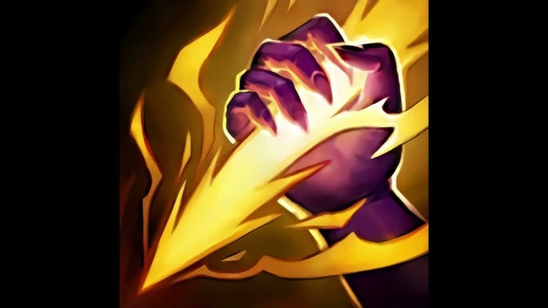
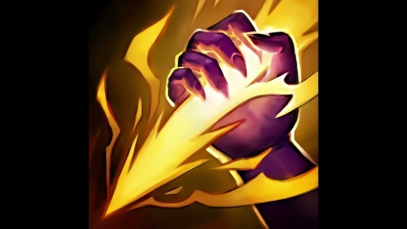

voici les diffrentes
compétences
Épouvantable épouvantail
PASSIF
La relique de Fiddlesticks est remplacée par des Effigies d'épouvantail.

Terreur
Q
Si Fiddlesticks blesse un ennemi avec un sort en n'étant pas visible ou s'il cible un ennemi avec la
propriété active de Terreur, il terrifie cet ennemi et le fait fuir aussi longtemps que dure l'effet.

Moisson fructueuse
W
Fiddlesticks draine l'essence vitale des ennemis proches, infligeant des dégâts d'exécution
supplémentaires à la fin de l'effet.

Fauchaison
E
Fiddlesticks donne un coup de faux dans une zone, ralentissant tous les ennemis touchés et réduisant au
silence ceux touchés au centre de la zone.

Rafale de corbeaux
R
Une nuée de corbeaux tourbillonne sauvagement autour de Fiddlesticks, infligeant des dégâts par
seconde à toutes les unités ennemies dans la zone.


 

 voici les summoners utilisable sur Fiddlesticks en jungle et en top
voici les summoners utilisable sur Fiddlesticks en jungle et en top